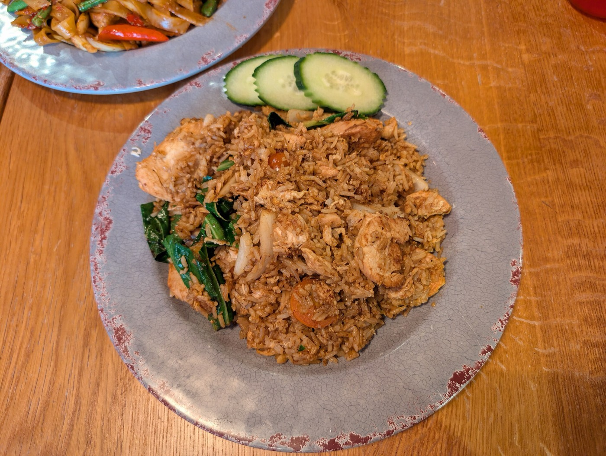
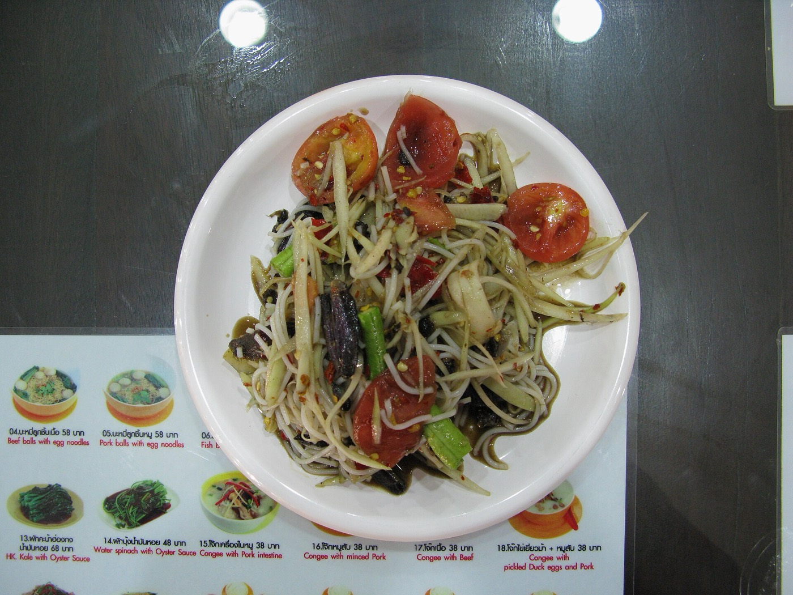

A small Thai kitchen on the Bophut road, cooking it the home way.
Sample menu. We will put your real dishes and prices here.


175/62 Moo 1, Bo Put, Koh Samui 84320
Your hours go here. Tell us and we will add them.